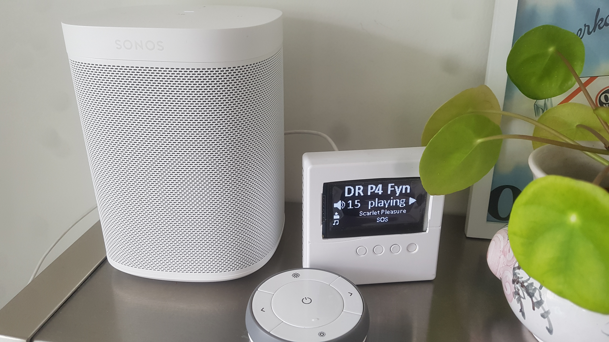
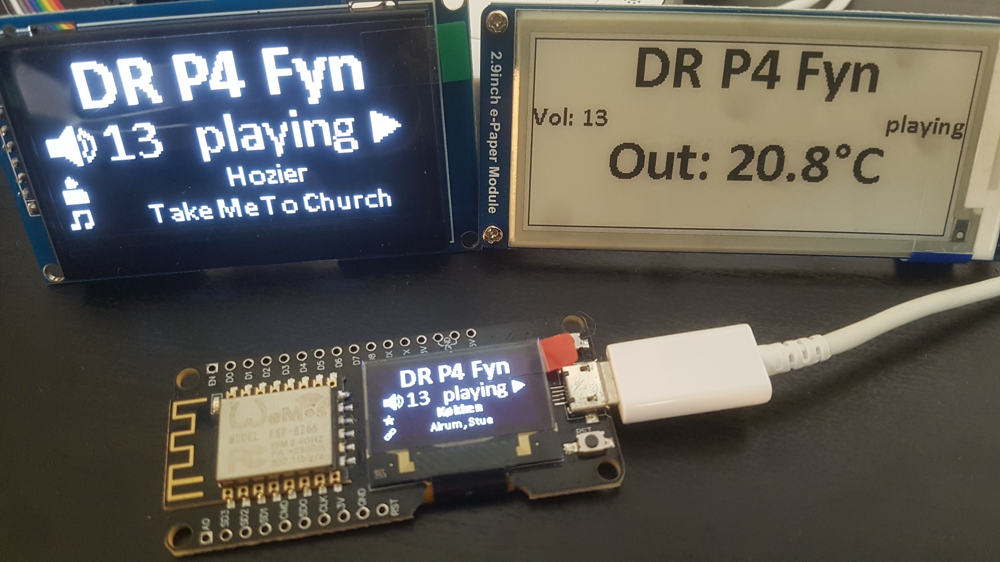

SONOS/SYMFONISK Display example


Using ControllerX - Controlling your Sonos speakers has never been easier 😎 But the occasional wish for a visual check on what’s actually playing, volume setting, media artist/title, active speakers in group etc. is still there 👀 Leaving you with no other choice than adding a display integration as the obvious solution for this need 😉
All it takes is an ESP8266 with ESPHome software, an appropriate display, a handful (well, actually 2 handfuls and then some) of HA sensors and you’re all set to go 🚀 ESPHome is a system framework for ESP8266 units that has support for several I2C OLED/E-ink display types and numerous sensors, has direct HA integration via add-on and easy, yet powerful YAML configuration. Read more about ESPHome and how to set it up in HA here: https://esphome.io/
Current v1.1 display code uses newly merged display on/off and brightness commands. Use ESPHome version 1.15.0b4 or newer !
YAML has been tested on NodeMCUv2, Wemos D1 Mini and NodeMCU with integrated display using both SSD1306 & SSD1309 displays (I2C connected).
Hardware:
I initially used the simple and inexpensive (less than 2 US$ ) SSD1306 0,96" OLED display for this build. Resolution is only 128x64. But still enough, when using several pages to be displayed continuously. The SSD1306 has a 'big brother' in the SSD1309 display. This display has identical resolution as SSD1306, is priced at some 14 US$, can use same drivers/library as SSD1306 but is much, much larger at 2,42". I really like this good sized and simple I2C display and ended up using this display in the final build, as it's much easier to read from a distance 🙂
An optional PIR sensor or microwave radar sensor can be added for automatic dimming (brightness control) and turning the display on/off completely. The RCWL 0516 sensor is cheap, but can be somewhat difficult to use in 'tight' builds as it's somewhat sensitive to many things - WiFi in particular. So you could experience some false triggers using this sensor if fitted very close to the ESP8266. AM 312 is a cheap and simple 'no nonsense' PIR sensor that just always works as expected. Sensor can also be used for other purposes as well in HA 🙂 Sensor is configured in YAML using pin D5 (GPIO14). Display is set to dim down after 5 minutes with no PIR triggers and completely off after additional 10 minutes without registered movement.
Please note that (at least on my display version) SSD1309 display can't be turned completely off with id(display_id).set_brightness(0) command, but this works perfectly on my SSD1306 display. Instead SSD1309 has to be turned on/off with specific id(display_id).turn_on()/id(display_id).turn_off() commands. Check what works on your display and revise implementation method/ESPHome yaml config code accordingly.
I've collected some hardware link examples below. These are just some random sellers I've picked. Not necessarily the cheapest or best sellers.
0,96" 12864 SSD1306 OLED display
2,42” 12864 SSD1309 OLED display
(direct replacement for the much smaller 0,96” SSD1306 display and can use same library)
Alternatively you can use a Wemos NodeMCU ESP8266 with integrated 0,96" OLED display
Optional sensors to dim display when no movement is detected.
Movement sensor 1: RCWL 0516 Microwave Micro Wave Radar Sensor Board
Movement sensor 2: AM312 # PIR Motion Human Sensor
One note on the SSD1309 display
In order to get display to work with I2C instead of SPI, you need to do a bit of soldering. On the specific display type I bought, you need to bridge (short) R5 and move R4 to R3. Remember that display will NOT work unless RES is connected to RST on ESP8266 (or any available pin and controlled in ESPHome sw). Note: Display only supports 3,3v on VCC. Some have reported that display tolerates 5v (some might). I wouldn’t take that risk, though! I’ve kept both CS and DS ‘floating’. Haven’t had any I2C address issues so far. Use pull-up/down resistors if you experience issues.
Connections: SSD1306/1309 --> Wemos D1 mini
VCC: 3,3v !!! (SSD1306 only: 3,3v-5v)
GND: GND
SDA: D1
SCL: D2
SSD1309 only --> Wemos D1 mini
RES: D0 or RST
CS : NC (No Connection - 'floating'. Default I2C address 0x3c)
DC : NC (No Connection - 'floating')
Display setup:
My current display setup consists of four pages that all are displayed for 5 seconds. Following information is displayed on the screen:
All pages: Source (if not present, display ‘Sonos/Playlist’), mute sign, volume setting and play/pause/idle status. Also displays shuffle sign when active for playlists
Page 1: Active main/passive speakers.
Page 2: Media artist/media title (if not available from stream, display time instead)
Page 3: Time
Page 4: Outdoor temperature sensor value
True Type Fonts:
Three 'standard' Calibri TT fonts are used plus a 'special' version of Heydings Icons font in which I've included some Heydings Controls icons as well. If you experience some strange characters on the display, you probably need to edit the glyphs in ESPHome YAML and add whatever language specific characters you find are missing.
Calibri TTF fonts link
Heydings Icons special file link
Copy Calibri Bold, Calibri Regular, Calibri Light fonts plus the special Heydings Icons Symbols font file to the ESPHome folder /config/esphome/
Home Assistant sensors:
Below you’ll find the HA template sensors needed in configuration.yaml for the ESPHome display to work. ESPHome will establish some four HA sensors as well, presented on HA frontend: PIR sensor, connection status, WiFi strength and display on/off sensor. If display on/off is turned off from HA, then triggering PIR will not turn on display or alter brightness.
Note: media_artist and media_title attributes from HA's Sonos integration could be swapped for some radio stations, as these attributes are split from one combined string in the stream. Some radio stations have artist - title order, others use title - artist. You really can't tell...
My danish radio stations (source list) all use the 'swapped' version, so my templates below swap these two attributes for radio stations.
Enter your main speaker as trigger entity ID for all templates but the first two (search for media_player.office and replace with your main speaker entity). Without this specific hardcoded trigger entity, templates simply don't always update correctly. So unfortunately they're needed for now, until I hopefully find a 'cleaner' and more dynamic solution.
# Sonos sensors
sensor:
- platform: template
sensors:
sonos_main_friendly:
friendly_name: "Sonos main Friendly"
entity_id: group.sonos_all
value_template: "{{ state_attr(state_attr('group.sonos_all', 'entity_id')[0], 'friendly_name') }}"
sonos_passives_friendly:
friendly_name: "Sonos passives Friendly"
entity_id: group.sonos_all
value_template: >-
{% for entity_id in state_attr("group.sonos_all", "entity_id")[1:] -%}
{% set friendly_name = state_attr(entity_id, "friendly_name") %}
{%- if loop.last %}{{ friendly_name }}{% else %}{{ friendly_name }}, {% endif -%}
{%- endfor %}
media_title: # Swap title/artist if 'source' attribute is not present = radio
entity_id: media_player.office # Sonos main speaker
value_template: >-
{% if is_state('sensor.media_source' , "no source") %}
{{ state_attr(state_attr('group.sonos_all', 'entity_id')[0], 'media_title') }}
{% else %}
{{ state_attr(state_attr('group.sonos_all', 'entity_id')[0], 'media_artist') }}
{% endif %}
media_artist: # Swap title/artist if 'source' attribute is not present = radio
entity_id: media_player.office # Sonos main speaker
value_template: >-
{% if is_state('sensor.media_source' , "no source") %}
{{ state_attr(state_attr('group.sonos_all', 'entity_id')[0], 'media_artist') }}
{% else %}
{{ state_attr(state_attr('group.sonos_all', 'entity_id')[0], 'media_title') }}
{% endif %}
media_album_name:
entity_id: media_player.office # Sonos main speaker
value_template: "{{ state_attr(state_attr('group.sonos_all', 'entity_id')[0], 'media_album_name') }}"
media_source: # Remove all after 'DR P4 Fyn' as source (to fit on display)
entity_id: media_player.office # Sonos main speaker
value_template: >-
{% if state_attr(state_attr('group.sonos_all', 'entity_id')[0], 'source') %}
{{states.media_player.office.attributes.source.split('96.8')[0]}}
{% else %}
no source
{% endif %}
volume:
entity_id: media_player.office # Sonos main speaker
value_template: "{{ state_attr(state_attr('group.sonos_all', 'entity_id')[0], 'volume_level')|float * 100 }}"
sonos_main_group_entities:
entity_id: media_player.office # Sonos main speaker
value_template: "{{ state_attr(state_attr('group.sonos_all', 'entity_id')[0], 'sonos_group') }}"
Home Assistant group:
Here you define your Sonos speaker entities. The main speaker has to be entered as the first entity, and that's all that's actually needed. Active passive speakers will dynamically be added on HA restart or when group configuration is changed (e.g. via the Sonos app or HA service calls). If you're only using one speaker, you still need to create the group in groups.yaml and populate with that single main speaker entity, as the group entity is needed in the code.
One note on main speaker, passives and Sonos groups
Your defined main speaker actually doesn't need to be the main speaker. As long as it's part of the group (main or passive), then display will still show data for the group. But if defined main speaker is removed from the group, it will be a 'single speaker group' on its own, and display will reflect main speaker data only.
sonos_all:
name: sonos_all
entities:
- media_player.office # This HAS to be your main speaker
# - media_player.kitchen # Optional - passive speaker #1
# - media_player.livingroom # Optional - passive speaker #2
Home Assistant automations:
First automation is identical with the one I've already used in my ControllerX Sonos group setup example link.
Second automation is purely optional, and not really directly related to the display. It's just a quick shortcut to easily reset active speakers within group, volume and source playing to some defaults you've defined in the automation. Really nice when you have teenagers in the house, messing with active speaker entities in the group, playlists and volume all the time... 😉
The automation is written for an Ikea E1810 remote with z2m ControllerX HA integration. Here toggle_hold (press and hold center button for appx. 3.5 seconds) is used as trigger.
- id: Dynamic Sonos groups
alias: Dynamic Sonos groups
trigger:
platform: state
entity_id: sensor.sonos_main_group_entities # Same as defined in configuration.yaml
platform: homeassistant
event: start
action:
- service: group.set
data_template:
object_id: sonos_all # Name of Sonos group in groups.yaml
entities: "{{ state_attr(state_attr('group.sonos_all', 'entity_id')[0], 'sonos_group') | join(',') }}"
- id: Sonos reset to defaults settings
alias: Sonos reset to defaults settings
trigger:
platform: state
entity_id: sensor.your_E1810_sensor_action
to: 'toggle_hold'
action:
- service: sonos.join
data:
main: media_player.office # This HAS to be your main speaker
entity_id:
- media_player.kitchen # passive speaker #1
- media_player.livingroom # passive speaker #2
- service: media_player.volume_set # Reset volume to 25 for all speakers
data_template:
entity_id:
- media_player.office
- media_player.kitchen
- media_player.livingroom
volume_level: 0.25
- service: media_player.select_source # Reset to your default choice of source
data:
entity_id: media_player.office # This HAS to be your main speaker
source: 'DR P4 Fyn 96.8 (Nyheder)'
- service: media_player.media_play # Start playing
entity_id: media_player.office # This HAS to be your main speaker
ESPHome YAML configuration:
As ESPHome currently doesn't support attributes, all data to be displayed has to be in separate HA sensors. Hence the huge amount of sensors.
If you're not using a movement sensor in your build, you could (but actually don't need to) revise YAML. If you experience issues with the 'floating' GPIO used for the PIR sensor, just pull pin D5 permanently low or high.
Two entities need to be entered. Your Sonos main speaker and optional temperature sensor. If temperature sensor is omitted, you can just revise YAML and delete page 3 & 4 from the display lambda configuration. Also remember to revise interval page count from 4 to 2.
Revise sonos_status and outdoor_temp sensors in YAML below, to match your HA entities for Sonos main speaker and outdoor temperature sensor. Create a new ESPHome node and configure it with your ESP8266 board settings and WiFi credentials. Edit node and copy/paste revised YAML below to your node. Remember to insert your node's autogenerated WiFi ap settings to YAML. Save it, upload and enjoy! 🎉😎
One final note on current YAML configuration
ESPHome is at max with all these included sensors, schedulers running and the quite extensive display lambda. Adding just one extra sensor to current YAML, will make ESPHome crash on boot. Omitting fast_connect: true from the WiFi configuration in YAML will also send ESPHome into an eternal stack trace error boot loop 🚀💀
So 'tweak' YAML with care! 😁😉
substitutions:
devicename: sonos_display
friendly_name: Sonos Display
device_description: Sonos SSD1306/1309 display for Sonos groups
esphome:
name: $devicename
comment: ${device_description}
platform: ESP8266
board: d1_mini
wifi:
ssid: "your_ssid"
password: "your_password"
fast_connect: true # Mandatory for fast WiFi connect to avoid stack trace error on boot
manual_ip:
static_ip: 192.168.XX.XX # Enter your static IP address. Needed for fast WiFi connect to avoid stack trace error on boot
gateway: 192.168.XX.XX # Enter your gateway
subnet: 255.255.255.0 # Enter your subnet
# Enable fallback hotspot (captive portal) in case wifi connection fails. Replace with your own node settings
ap:
ssid: "Sonos Display Fallback Hotspot"
password: "your_autogenerated_password"
captive_portal:
# Enable logging
logger:
# Enable Home Assistant API
api:
ota:
time:
- platform: homeassistant
id: esptime
switch:
# ** Not used - Currently ESPHome can't handle more sensors/switches than already installed ***
#- platform: restart
# name: "${friendly_name} Restart"
# icon: "mdi:restart"
- platform: template
name: "${friendly_name} On/Off"
id: sonos_display
turn_on_action:
- switch.template.publish:
id: sonos_display
state: ON
- lambda: |-
id(sonos).turn_on();
id(sonos).set_brightness(1);
turn_off_action:
- switch.template.publish:
id: sonos_display
state: OFF
- lambda: |-
id(sonos).turn_off();
sensor:
# Outdoor temperature sensor - only used in display lambda page 4
- platform: homeassistant
id: outdoor_temp
entity_id: sensor.your_temperature_sensor
internal: true
- platform: homeassistant
id: sonos_volume
entity_id: sensor.volume
internal: true
# Create WiFi signal sensor in HA
- platform: wifi_signal
name: "${friendly_name} WiFi Signal"
update_interval: 60s
text_sensor:
# Sonos main speaker
- platform: homeassistant
id: sonos_status
entity_id: media_player.your_main_speaker
internal: true
- platform: homeassistant
id: media_source
entity_id: sensor.media_source
internal: true
- platform: homeassistant
id: media_artist
entity_id: sensor.media_artist
internal: true
- platform: homeassistant
id: media_title
entity_id: sensor.media_title
internal: true
# ** Not yet used - Currently ESPHome can't handle more sensors than already installed ***
#- platform: homeassistant
# id: media_album_title
# entity_id: sensor.media_album_title // Not in use yet
# internal: true
- platform: homeassistant
id: sonos_main
entity_id: sensor.sonos_main_friendly
internal: true
- platform: homeassistant
id: sonos_passives
entity_id: sensor.sonos_passives_friendly
internal: true
binary_sensor:
- platform: homeassistant
id: mute
entity_id: binary_sensor.is_volume_muted
internal: true
- platform: homeassistant
id: shuffle
entity_id: binary_sensor.shuffle
internal: true
- platform: gpio
pin: D5
name: "${friendly_name} PIR"
device_class: motion
on_press:
then:
- binary_sensor.template.publish:
id: dim_display
state: ON
- binary_sensor.template.publish:
id: display_off
state: ON
on_release:
then:
- binary_sensor.template.publish:
id: dim_display
state: OFF
- binary_sensor.template.publish:
id: display_off
state: OFF
# Create HA connected sensor
- platform: status
name: "${friendly_name} Status"
- platform: template
id: dim_display
filters:
- delayed_off: 5min # Dim display after 5 minutes
on_press: # brightness is float (from 0 to 1). 1 = 100%
then:
- lambda: |-
if (id(sonos_display).state == true) {
id(sonos).turn_on();
id(sonos).set_brightness(1);
}
on_release: # brightness is float (from 0 to 1). 0.01 = 1%
then:
- lambda: |-
id(sonos).set_brightness(0.01);
- platform: template
id: display_off
filters:
- delayed_off: 15min # Turn off display after 15 minutes
on_release:
then:
- lambda: |-
id(sonos).turn_off();
font:
- file: "Calibri Bold.ttf"
id: font_large
size: 23
glyphs: '!%"()+,-_.:°0123456789ABCDEFGHIJKLMNOPQRSTUVWXYZ abcdefghijklmnopqrstuvwxyz█£$@æøåÆØÅ&#''´’?üöäé'
- file: "Calibri Regular.ttf"
id: font_medium
size: 19
glyphs: '!%"()+,-_.:°0123456789ABCDEFGHIJKLMNOPQRSTUVWXYZ abcdefghijklmnopqrstuvwxyz█£$@æøåÆØÅ&#''´’?üöäé'
- file: "Calibri Light.ttf"
id: font_small
size: 11
glyphs: '!%"()+,-_.:°0123456789ABCDEFGHIJKLMNOPQRSTUVWXYZ abcdefghijklmnopqrstuvwxyz█£$@æøåÆØÅ&#''´’?üöäé'
- file: "Calibri Bold.ttf"
id: font_small_bold
size: 12
glyphs: '!%"()+,-_.:°0123456789ABCDEFGHIJKLMNOPQRSTUVWXYZ abcdefghijklmnopqrstuvwxyz█£$@æøåÆØÅ&#''´’?üöäé'
- file: "HeydingsIconsSymbols.ttf"
id: font_icons_large
size: 23
glyphs: "0679HADJabjsmx"
- file: "HeydingsIconsSymbols.ttf"
id: font_icons_medium
size: 19
glyphs: "0679HADJabjsmx"
- file: "HeydingsIconsSymbols.ttf"
id: font_icons_14
size: 14
glyphs: "0679HADJabjsmx"
- file: "HeydingsIconsSymbols.ttf"
id: font_icons_small
size: 11
glyphs: "0679HADJabjsmx"
globals:
- id: display_page
type: int
restore_value: no
initial_value: "0" # On first boot, value=0 initiates display.turn_on() command. Can't run as on_boot command
interval:
- interval: 5s # Show each page for 5 seconds
then:
- lambda: |-
if (id(display_page) == 0) {
id(sonos_display).turn_on();
}
if (id(display_page) < 4) {
id(display_page)++;
} else {
id(display_page) = 1;
}
i2c:
sda: D1
scl: D2
frequency: 100khz # Default 50kHz. Min. setting at 100kHz needed. Otherwise lambda is so slow that warnings appear in log
display:
- platform: ssd1306_i2c
model: "SSD1306 128x64"
reset_pin: D0
address: 0x3C # Default address for most SSD1306/1309 displays
brightness: 100%
update_interval: 1s
id: sonos
pages:
lambda: |-
if (id(media_source).state != "no source") {
it.printf(64, 0, id(font_large), TextAlign::TOP_CENTER, "%.12s", id(media_source).state.c_str());
} else {
if (id(display_page) == 1 or (id(display_page) == 3)) {
it.printf(64, 0, id(font_large), TextAlign::TOP_CENTER, "Sonos"); // if no source list attribute, display Sonos Playlist instead
} else {
it.printf(64, 0, id(font_large), TextAlign::TOP_CENTER, "Playlist"); // if no source list attribute, display Sonos Playlist instead
}
if (id(shuffle).state) {
it.printf(127, 17, id(font_icons_large), TextAlign::BOTTOM_RIGHT, "x"); // shuffle playlist sign at top right position
}
}
if (id(mute).state) {
it.printf(0, 20, id(font_icons_medium), TextAlign::TOP_LEFT, "0"); // speaker mute sign
} else {
it.printf(0, 20, id(font_icons_medium), TextAlign::TOP_LEFT, "m"); // speaker on sign
}
it.printf(21, 22, id(font_medium), TextAlign::TOP_LEFT, "%.f", id(sonos_volume).state);
if (id(sonos_status).state == "playing") {
it.printf(127, 18, id(font_icons_medium), TextAlign::TOP_RIGHT, "6"); // pause sign
} else if (id(sonos_status).state == "paused") {
it.printf(127, 18, id(font_icons_medium), TextAlign::TOP_RIGHT, "7"); // play sign
} else {
it.printf(127, 18, id(font_icons_medium), TextAlign::TOP_RIGHT, "9"); // stop sign
}
it.printf(107, 22, id(font_medium), TextAlign::TOP_RIGHT, "%s", id(sonos_status).state.c_str());
if (id(display_page) == 1) {
it.printf(00, 53, id(font_icons_small), TextAlign::BOTTOM_LEFT, "s"); // star sign for main speaker
it.printf(64, 53, id(font_small_bold), TextAlign::BOTTOM_CENTER, "%s", id(sonos_main).state.c_str());
it.printf(00, 65, id(font_icons_small), TextAlign::BOTTOM_LEFT, "a"); // chain sign for passive speaker(s)
it.printf(64, 65, id(font_small), TextAlign::BOTTOM_CENTER, "%s", id(sonos_passives).state.c_str());
} else if (id(display_page) == 2) {
if (id(media_title).state != "None") {
it.printf(73, 53, id(font_small), TextAlign::BOTTOM_CENTER, "%.24s", id(media_title).state.c_str());
it.printf(73, 65, id(font_small), TextAlign::BOTTOM_CENTER, "%.24s", id(media_artist).state.c_str());
it.printf(00, 51, id(font_icons_14), TextAlign::BOTTOM_LEFT, "j"); // note sign (title)
it.printf(00, 65, id(font_icons_small), TextAlign::BOTTOM_LEFT, "A"); // person sign (artist)
} else {
it.strftime(64, 42, id(font_large), TextAlign::TOP_CENTER, "%H:%M:%S", id(esptime).now());
}
} else if (id(display_page) == 3) {
it.strftime(64, 42, id(font_large), TextAlign::TOP_CENTER, "%H:%M:%S", id(esptime).now());
} else {
it.printf(64, 42, id(font_large), TextAlign::TOP_CENTER, "Out: %.1f°C", id(outdoor_temp).state);
}
Change log
- Initial version published July, 2020
- v1.1 published September, 2020
- Added optional sensor for brightness control & display on/off
- Added 'shuffle' & 'mute' signs
- When idle, display 'stop' sign and 'idle' text
- Revised display lambda page code
- Four ESPHome sensors exposed in HA
- Connected status
- WiFi strength
- Display on/off
- PIR
Future plans:
- Design 2,9" E-paper display version
- Improve/simplify HA sensor templates (if possible)
- Remove need for main entity everywhere in config files
Thank you Xavi for providing the perfect solution for some of my templating issues 👍😎
September, 2020 @htvekov